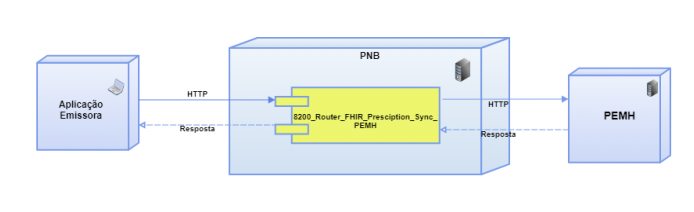
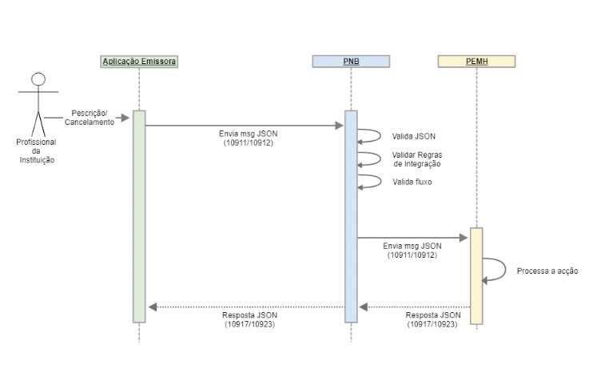

HL7 PT FHIR Implementation Guide: PEM-H | R4 // STU3
1.0.0 - STU1

HL7 PT FHIR Implementation Guide: PEM-H | R4 // STU3
1.0.0 - STU1

HL7 PT FHIR Implementation Guide: PEM-H | R4 // STU3 - Local Development build (v1.0.0). See the Directory of published versions
O presente relatório diz respeito aos fluxos do Gestão de Medicação relativos às as regras de prescrição eletrónica de medicamentos a utentes em regime de ambulatório hospitalar e os procedimentos de dispensa pelos/através dos Serviços Farmacêuticos Hospitalares destes medicamentos, incluindo os que se destinam a ser administrados por profissionais de saúde nos serviços de ambulatório do hospital: hospital de dia, consulta externa, cirurgia de ambulatório e serviço de urgência. Os fluxos do Gestão de Medicação são controlados pela interoperabilidade através do grupo de canais “82XX”. Mais especificamente, a comunicação no âmbito da gestão de medicação é mediada pelo PNB, através dos seguintes fluxos:
O fluxo de Prescrição de Medicação é representado pelo Evento 10724 - MED_PRESCRIPTION_SYNCHRONIZATION, através das operações:
Sempre que é efetuada uma nova prescrição/cancelamento pelas aplicações de origem, é enviado um pedido diretamente para o PNB, por parte da aplicação emissora, quer se trate de uma aplicação interno ou de um player externo. Sendo um fluxo síncrono, a aplicação emissora deve ficar a aguardar a resposta da PEMH pelo mesmo canal em que foi enviada a mensagem de prescrição/cancelamento.
A arquitetura da integração do fluxo que passa pelo PNB, pode ser visualizado na Figura 1.

A Aplicação Emissora envia uma mensagem para o PNB, o qual após validar estruturalmente a mensagem envia à PEMH. A resposta da mensagem será emitida pela PEMH, validada estruturalmente pela PNB, que encaminha a mensagem para a aplicação correspondente. Esse fluxo pode ser visualizado na Figura 2.

Tabela 1. Caracterização dos fluxos e formato das mensagens trocadas.
| Diagrama de deployment | Nome do canal | Source connector | Destination connector | ||||||||
|---|---|---|---|---|---|---|---|---|---|---|---|
| Tipo de fluxo | Emissor | Tipo | Formato de mensagem de entrada | Formato de mensagem de saida | Nome | Tipo | Formato de mensagem de entrada | Formato de mensagem de saida | Recetor | ||
| Figura 1 Prescrição de medicação | 8200_Router_FHIR_Prescription_Sync_PEMH | Síncrono | Aplicação Emissora (envio pedido 10911 /10912) | HTTP Listener | JSON | JSON | PEMH | HTTP Sender | JSON | JSON | PEMH |
Tabela 2. Operações possíveis para os fluxos de prescrição
| Operação | Código | Descrição |
|---|---|---|
| MED_PRESCRIPTION_NEW | 10911 | Prescrever Medicação |
| MED_PRESCRIPTION_ACK | 10917 | Retorno da Prescrição da Medicação |
| MED_PRESCRIPTION_CANCEL | 10912 | Cancelar Prescrição de Medicação |
| MED_PRESCRIPTION_CANCEL_ACK | 10923 | Retorno de Cancelar Prescrição da Medicação |